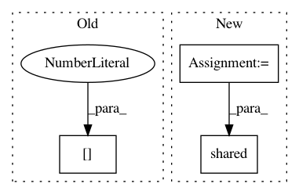

b2f9f5dbaa24a39e6cea2f8f8df0dd721c0e467e,deepmedic/neuralnet/ops.py,,createAndInitializeWeightsTensor,#Any#Any#Any#,148
Before Change
if initializationTechniqueClassic0orDelvingInto1 == 0 :
stdForInitialization = 0.01
elif initializationTechniqueClassic0orDelvingInto1 == 1 :
stdForInitialization = np.sqrt( 2.0 / (filterShape[1] * filterShape[2] * filterShape[3] * filterShape[4]) ) //Delving Into rectifiers suggestion.
elif initializationTechniqueClassic0orDelvingInto1 == 2 : // For SNN
stdForInitialization = np.sqrt( 1.0 / (filterShape[1] * filterShape[2] * filterShape[3] * filterShape[4]) ) // Half of He et al, cause 2 counters ReLU effect.
After Change
if convWInitMethod[0] == "normal" :
stdForInit = convWInitMethod[1] // commonly 0.01 from Krizhevski
elif convWInitMethod[0] == "fanIn" :
varianceScale = convWInitMethod[1] // 2 for init ala Delving into Rectifier, 1 for SNN.
stdForInit = np.sqrt( varianceScale / (filterShape[1] * filterShape[2] * filterShape[3] * filterShape[4]) )
// Perhaps I want to use: theano.config.floatX in the below
wInitNpArray = np.asarray( rng.normal(loc=0.0, scale=stdForInit, size=(filterShape[0],filterShape[1],filterShape[2],filterShape[3],filterShape[4])), dtype="float32" )
W = theano.shared( wInitNpArray, borrow=True )
// W shape: [//FMs of this layer, //FMs of Input, rKernFims, cKernDims, zKernDims]
return W
def convolveWithGivenWeightMatrix(W, filterShape, inputToConvTrain, inputToConvVal, inputToConvTest, inputToConvShapeTrain, inputToConvShapeVal, inputToConvShapeTest) :
In pattern: SUPERPATTERN
Frequency: 3
Non-data size: 3
Instances
Project Name: Kamnitsask/deepmedic
Commit Name: b2f9f5dbaa24a39e6cea2f8f8df0dd721c0e467e
Time: 2017-10-30
Author: konstantinos.kamnitsas12@imperial.ac.uk
File Name: deepmedic/neuralnet/ops.py
Class Name:
Method Name: createAndInitializeWeightsTensor
Project Name: NeuromorphicProcessorProject/snn_toolbox
Commit Name: 1be7c5996fa959572854044d3cc580a2abc6bfa7
Time: 2016-11-25
Author: bodo.rueckauer@gmail.com
File Name: snntoolbox/core/inisim.py
Class Name:
Method Name: init_neurons
Project Name: Theano/Theano
Commit Name: 9db32ceedaef0873f99b4a7f400e705dd6d64173
Time: 2016-10-12
Author: gvtulder@gmail.com
File Name: theano/sandbox/cuda/tests/test_gemmcorr3d.py
Class Name: TestCorr3DMM
Method Name: run_gradinput